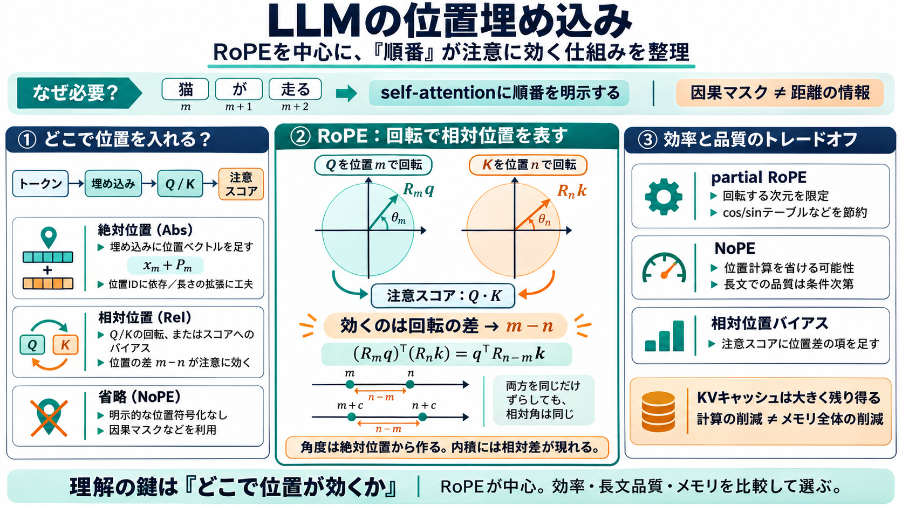

Understanding Positional Embeddings in Modern LLMs
LLMs need explicit positional information because attention alone can't distinguish word order beyond what a causal mask…

positional embeddings 入門
トークンの「順番」をどう表現し、self-attention（注意機構）の計算にどう効くのかを、RoPE（Rotary Position Embedding）中心に整理します。
順序は弱い
Transformerのself-attentionはトークン同士の関係を見ますが、埋め込みだけだと「何番目か」の情報が弱くなります。結果として、語順の違いが十分に区別されないリスクが出ます。
計算の流れ
トークナイザがトークン列を作り、各トークンをベクトル（埋め込み）へ変換。そこへ位置情報を入れてから、Q/Kの注意計算で混ぜていきます。
3つの系統
位置情報の入れ方は大きく「絶対（足す）」「相対（注意計算に結び付け）」「省略（NoPE）」に分かれます。違いは主に“どこで”位置が効くかです。
絶対の性質
位置ベクトルを埋め込みに“足す”方式では、トークンの絶対位置mに応じて表現が変わります。コンテキスト長を超えると拡張が必要になり、運用コストが増えやすいです。
回転で相対化
RoPEは「回転」によって位置を注意計算へ埋め込みます。QとKを位置m,nに応じて回転させることで、ドット積が“相対オフセット（m-n）”に感応します。
Q·Kに入る
回転角自体は絶対位置m,nから計算されます。ですが重要なのは最終的に注意スコアへ効く“QとKの相対的な回転差”で、ドット積は角度差（ひいてはm-n）を反映します。
近年の分岐
RoPEが主流でも、計算・メモリ・長文安定性のバランスを狙ってバリエーションが増えています（例：partial RoPE、NoPE、相対位置バイアス）。
効率とトレードオフ
partial RoPEやNoPEは“削れるもの”と“削れないもの”が分かれます。特にKVキャッシュがキー/値を保持するため、節約効果が想定より小さい可能性があります。
実務の見取り図
俯瞰するとRoPEを全面適用するモデルが依然主流で、今後も一定期間は支配的と見られます。ただしpartial/NoPE/相対バイアスの混在も増える可能性があります。
理解の要点
方式の差は、位置情報が「埋め込みへ足されるのか」「Q/Kを回転させるのか」「注意スコアへバイアスとして足されるのか」「そもそも省略するのか」に現れます。ここを追うと比較が速くなります。
参照元（抜粋）
本スライドは、提示文の内容を整理し、Web検索の要約が同趣旨である点を補強として反映しています。
LLMs need explicit positional information because attention alone can't distinguish word order beyond what a causal mask…
As discussed throughout the article, regular “full” RoPE rotates all dimensions in each query and key head. Partial RoPE…
1. How the original transformer architecture and early GPT models add position vectors to token embeddings. 2. How RoPE …
The shift from absolute learnable positional embeddings to RoPE in modern LLMs highlights a trade-off between Sutton’s d…
# Sebastian Raschka [...] ## Experience - Assistant Professor of Statistics at University of Wisconsin-Madison (Jan 2018…